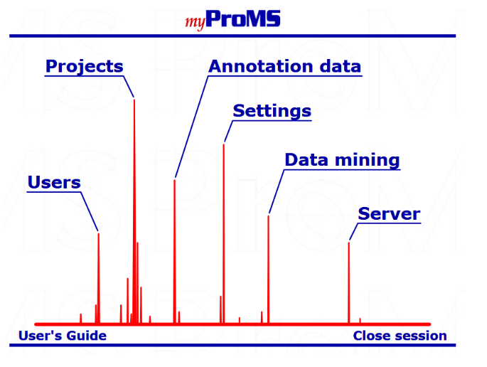

Server Architecture¶
Once logged to myProMS, your login, user class (see the Users management chapter below for more information) and connection date are displayed at the top of the browser window. Depending of your user class, either myProMS main window (Massist and bioinformatician) or the Project selection window (biologist) will be displayed as shown below. Users (including biologists) can access the main window at any time by selecting
Main Windowfrom the Project selection window.
- The main window displays links to the 6 areas of myProMS:
- Users management;
- Projects access and management;
- Protein annotation data management;
- Settings management;
- Data mining section*;
- Server management
*Not yet available.
Each of these sections is described in a dedicated chapter (see below). Some sections might not be accessible to users depending on their access privileges. Typically, most end users will have access only to their account and projects. See User classes and access privileges for more information.